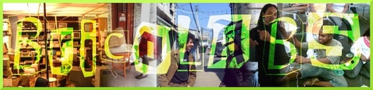
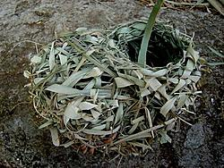

Jaromil's Musings

 printable page
printable page
printable page
printable page


A global platform to investigate the new loop of open content, software and hardware for community applications, bringing people together with new technologies and distributed connectivity, unlike the dominant focus of IT industry on security, surveillance and monopoly of information and infrastructures.

It is important to recognise that the end goal of our work is not the creation of novel devices, new markets, or emergent forms of communicative activities. Instead, our goal is the development of a generic information infrastructure - and the tools and knowledge required to use, appropriate, rework, and innovate it.
We see such a resource, created, maintained, and owned by no one individual, institution, or company, as a necessary part of a digital territory in which a global, informed, and socially engaged citizenry has the potential to develop and grow. Such a terrain is not just about the technology; equally important is the development of the critical making skills that allow this citizenry to engage with their information landscape, to make educated political and economic as well as technical decisions.
The coming decade worldwide will be determined by the strained relationship between formal and informal structures and environments. A design for commoning one that views uncommon ground as a resource, rather than a threat is the way towards living together locally in a globally connected world.
( Matt Ratto )

More musings on http://jaromil.dyne.org/journal
R&D at the Netherlands Media Art Institute (NIMK)
Thanks, a thousand flowers will blossom!

|


|


|
 copyleft 2000 - 2009 dyne.org
foundation and respective authors. Verbatim copying
and distribution is permitted in any medium, provided
this notice is preserved.
Send inquiries & questions to dyne.org's hackers. copyleft 2000 - 2009 dyne.org
foundation and respective authors. Verbatim copying
and distribution is permitted in any medium, provided
this notice is preserved.
Send inquiries & questions to dyne.org's hackers.
|

|